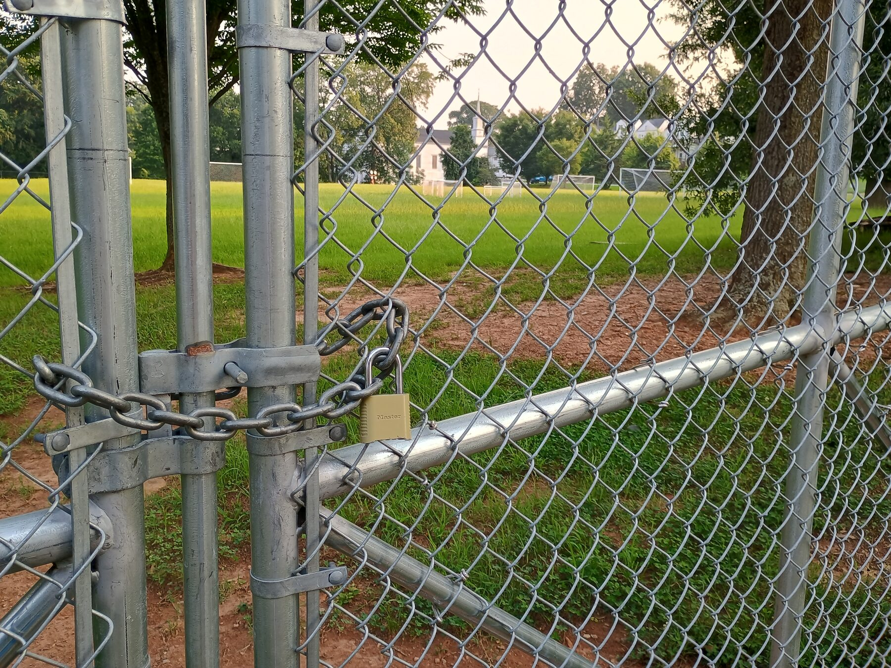
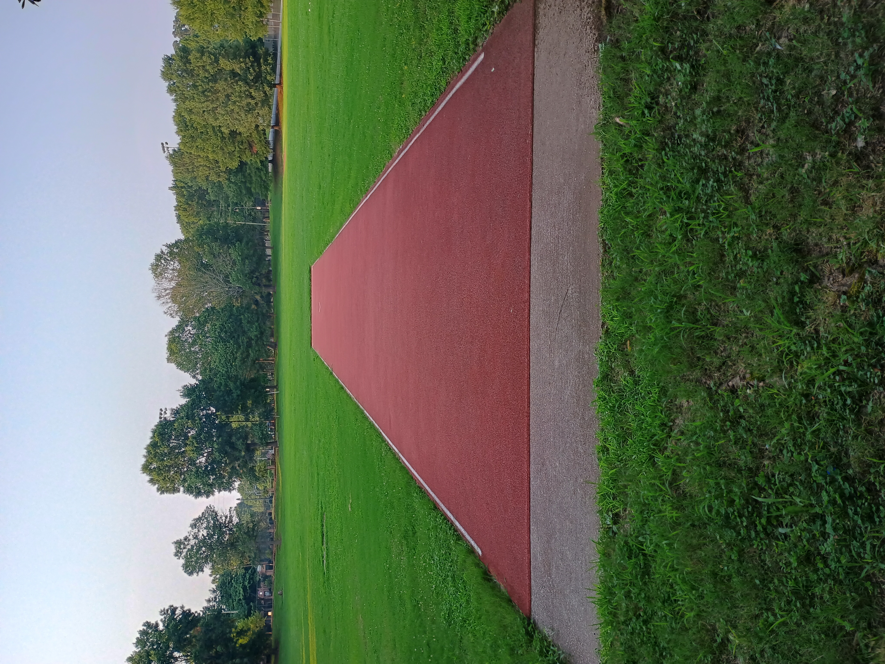
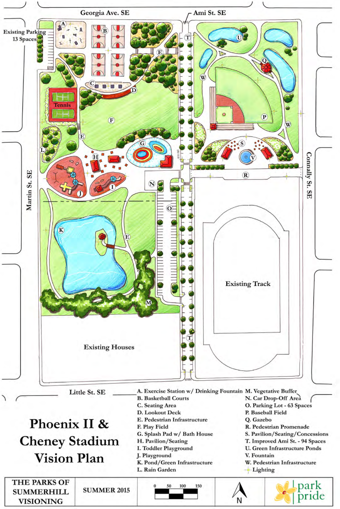

Our Soccer Fields
This field is the proposed site of a new parking lot. Local children currently play soccer here during scheduled games. At other times, access is generally restricted by Atlanta Public Schools.
The field is somewhat hilly, while the nearby javelin field offers a larger, flatter space. However, that field is not generally available for community soccer.
Our Athletic Field
This field is the proposed site of the indoor track facility. The community currently uses it for flag football, cross-country meets, adult pickup soccer, ultimate frisbee, youth football, and other recreational activities.
The field also serves as the javelin and shot put area rebuilt as part of Atlanta Track Club’s earlier renovation of Cheney Stadium.

The community’s vision
A connected public park.
Since 2015, neighborhood residents have supported a vision for connecting Phoenix II Park and Cheney Stadium as a unified public recreation space.
The plan includes sports fields, play areas, walking paths, water features, and gathering spaces, creating a more welcoming and accessible park for the surrounding community.
